Potential & Concept Education
Guwahati
My New Beginning
MY LAST GIFT FOR YOU

After that first birthday wish, the conversations didn't end.
One message slowly led to another. We talked regularly, sharing little things about our days and getting to know each other a little more with every conversation.
Without either of us noticing exactly when, talking to each other became a habit.
We would borrow the phones in the name of studying. But somehow, the hours meant for books often slipped into conversations with each other.
My friends had started teasing me with your name.
Whenever I heard your name, I would blush before I could stop myself.
There was something I wanted to ask you for. I wanted a photograph of you.
But I was afraid to ask. What if you judged me? What if you wondered why I wanted a photograph of you?
I kept thinking about it, unsure how you would react. Eventually, I gathered the courage and asked you.
And you sent it.
It was the very first photograph of yourself you had ever sent me.
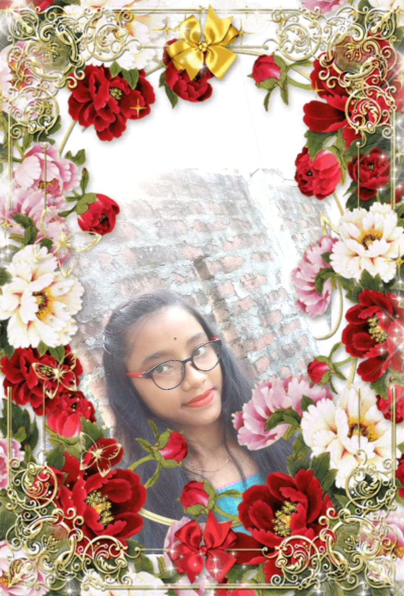
Back then, those days felt as though they would never run out.
There would always be another conversation, another ordinary day, another little moment to look forward to.
I never thought that someday, these would be the very moments I'd wish to return to, just once more.
And soon the day arrived when I was gonna confess everything
Our tuition class was cancelled. Sir had told me first and asked me to let the others know if anyone came, because my house was right next to the place where we held our classes.
I had planned to tell you how I felt that day. When the class was cancelled, I thought I had lost my chance. But you came anyway, not knowing the class had been cancelled.
Seeing you made me immensely happy. But when the moment came, nervousness took over. I couldn't say what I had rehearsed. I only told you that class had been cancelled.
As I couldn't express my feelings in person, so I decided to put them into message instead.
I kept waiting for sunset as that was usually when we talked and I was looking forward to that familiar moment. That day seemed to move more slowly than any other
My words were ready, but I wasn’t. Before I sent you the message, my heart was racing, my knee would not stay still and my hands trembled over the keyboard.
Every word seemed difficult to type. I was excited, afraid and unable to settle my thoughts.
I couldn't find the courage to tell you everything I felt directly. So I wrote this poem for you, hoping the words would say what I couldn't.
Do you know I am afraid of you?
I am afraid to talk to you
I am afraid when you come to me
I am afraid to lose you
I am afraid to ask you
Would you love me?
But today I have made my mindset
To let you know everything I feel for you
The poem had finally spoken the words I had struggled for so long to express. At last, you knew how I felt.
You weren't ready with an answer. You needed time to think and I respected that. But waiting was harder than I had imagined. Questions kept filling my mind, returning again and again, no matter how hard I tried to push them away.
What if you said no?
What if things between us changed?
What if, in hoping for something more, I ended up losing the friendship I already cherished?
That night, my mind wouldn't rest. I couldn't sleep. I kept imagining every possible answer, every possible outcome, unable to escape the fear of what might come. It was one of the longest nights of my life.
The answer I had been waiting for.
It was as though the world had quietly changed its colours overnight. The same sky, the same streets, the same familiar world, yet everything seemed to have found a little more light.
The fears that had kept me company through the night slowly drifted away, like darkness retreating from a window at the first touch of dawn.
And then came the most beautiful realisation: the feelings I had been carrying in the quiet corners of my heart had found a home in yours too.
You said yes and somewhere between those two little words, an entire world I had only ever dreamed of came alive.
Perhaps that is what happiness feels like — when a wish you have whispered to the universe finally whispers back.
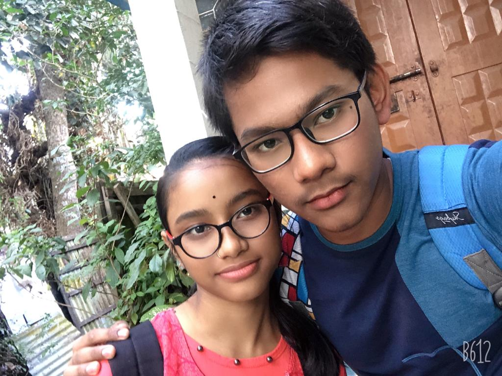
It had been just three days since we had become a couple.
On November 28, 2020, we went to tuition earlier than usual, hoping to spend a little more time together.
We were excited, but a little nervous too because our tuition was at my uncle's house, where everyone knew me. We were also afraid someone might notice us and start spreading rumours about our relationship.
That afternoon, I gently placed my hand over your shoulder as we took our first selfies together. It might have seemed like a simple gesture, but for us, it meant so much. I knew that kind of closeness was new to you, which made that little moment specially precious to both of us.
Those two photographs became our first captured memories as a couple.
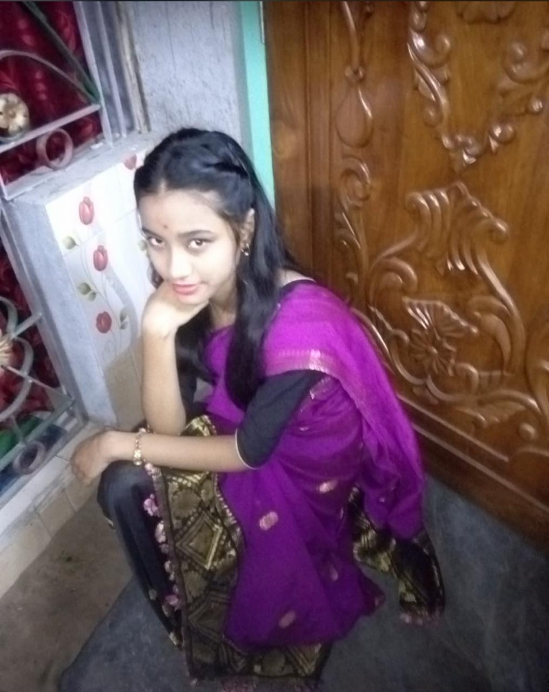
After we got into a relationship, you once shared this photograph with me.
I jokingly asked you to put it as your WhatsApp profile picture. I said it so casually, never imagining that you would actually do it. But you put that picture up almost immediately, without hesitation or a second thought. You did it so quickly that I didn't even get the chance to tell you I was only joking.
It might have seemed like such a small thing, but for some reason, it stayed with me. Seeing you do something so simple just because I had asked made me feel that I had become someone special to you.
Perhaps it wasn't a grand gesture, but sometimes, the smallest things make us feel the most special.
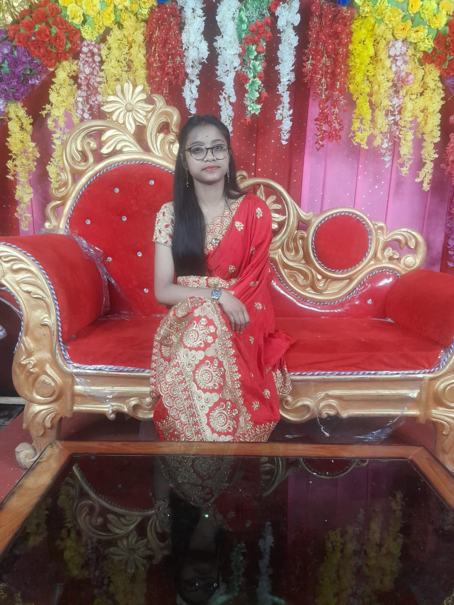
I don't think you ever realised how deeply these photographs affected me. They were taken at your neighbour's wedding, which you had attended. I was already in love with you but seeing you like this made me fall a little deeper.
I was genuinely mesmerised by the way you looked and carried yourself. Even my best friends couldn't stop praising that look of yours and I remember wishing I could have witnessed that beautiful moment with my own eyes rather than through photographs.
Perhaps you never knew how many times I went back to look at those pictures or how much happiness they brought me. Even today, whenever I look at them, I still see the same person who made me fall a little deeper in love.
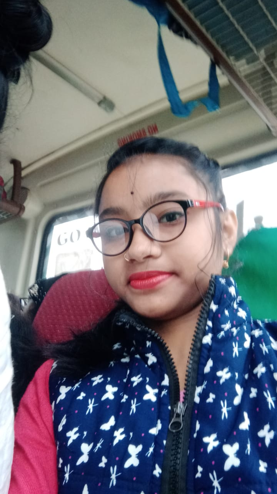
These photographs were from the picnic you went on with our tuition group.
I had wanted to be there too, but by then, my parents had found out about our relationship and wouldn't allow me to go. To make matters worse, our school had organised its own picnic just a day before theirs. I had been looking forward to this one for so long, only to end up missing it.
But honestly, it was never really about the picnic itself. It was about the time I had imagined spending with you, the memories we could have made and all those little moments we could have shared.
Even today, I sometimes wonder what that day might have been like if I had been there with you. Perhaps it would have become another beautiful memory for us to look back on.
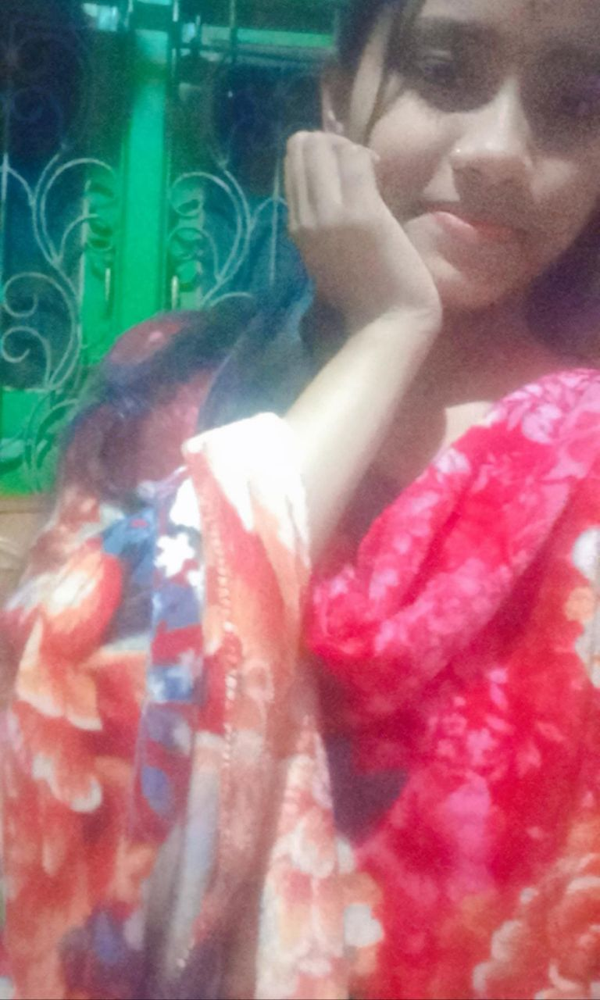
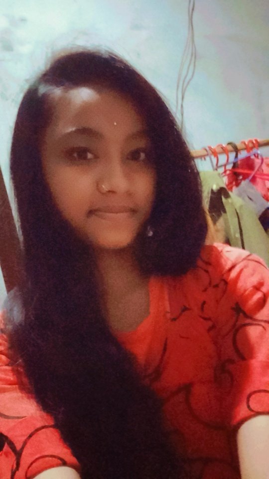
You were never much of a photo person, so you rarely had many pictures of yourself.
I used to complain that I never had enough photographs of you to look at. And perhaps, just to make me happy, you would sometimes take a picture of yourself and send it to me, completely out of the blue.
They might have been ordinary, unplanned pictures to you, but to me, each one felt special. I would find myself looking at them again and again, holding on to those little glimpses of you.
Little did you know that those random photographs would become some of my most treasured memories of you.
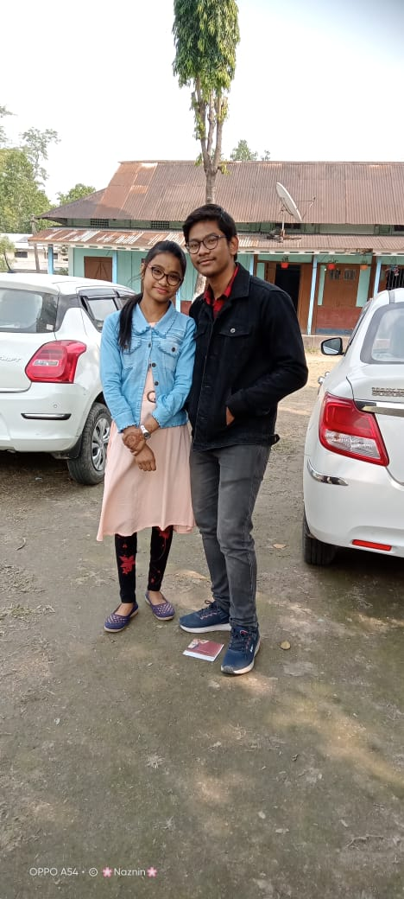
These were the last photographs we took together before distance slowly found its way into our lives.
They were taken during the Milad celebration at your school. I still remember how our friends teased me when they saw these pictures, pointing out how happily we were smiling beside each other and how good we looked together.
We didn't know it then, but our paths would soon take us in different directions. You chose Arts and stayed here, while I chose Science and moved to Dhubri to continue my studies.
Looking back, there's something bittersweet about these photographs. At the time, they were simply pictures of two people smiling together. But they became the last captured moments of a chapter in which being together was still so much easier.
I didn't know then how much I would come to miss moments like these.
After HSLC, our different stream choices began taking us in different directions. You stayed in Halakura to pursue Arts, while I moved to Dhubri to study Science.
Until then, seeing you had been part of my everyday life. We attended the same tuition and lived close enough that meeting never needed planning. But now, we were in different places and the familiar ease of seeing each other was changing. We were still together, but for the first time, distance had become a part of our story.
Even though distance had changed the way we could meet, I wasn't ready to give up those moments with you. I knew I couldn't see you as easily as before, but I wasn't going to let go of every chance I still had. There was still one thing that connected us.
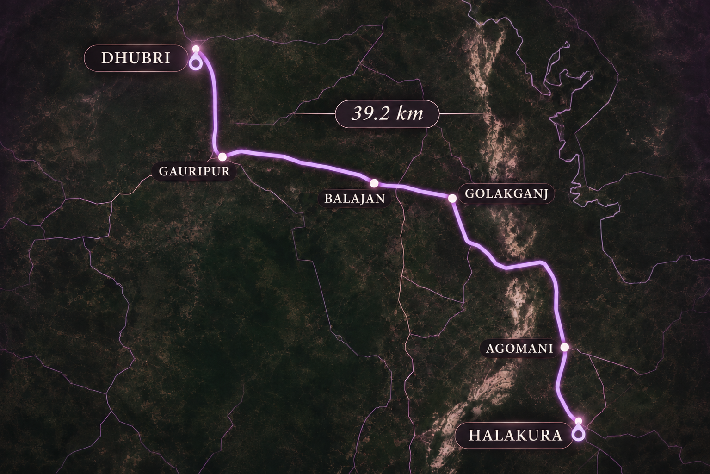
During weekends and holidays, I would travel from Dhubri to Halakura just to attend the same English tuition as you.
On the surface, it was about improving my English. But deep down, I knew you were the real reason I kept making that journey. I didn't want to miss any chance to see you, even if it meant travelling all that way just to spend a little more time in the same room.
Somehow, those ordinary weekends became something I would always remember.
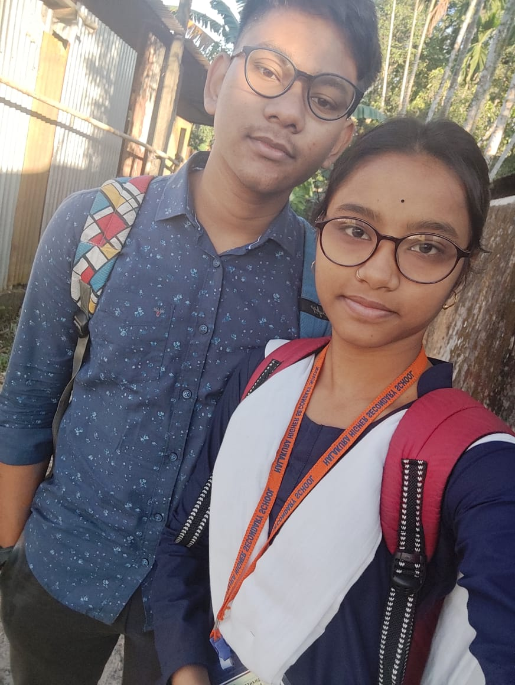
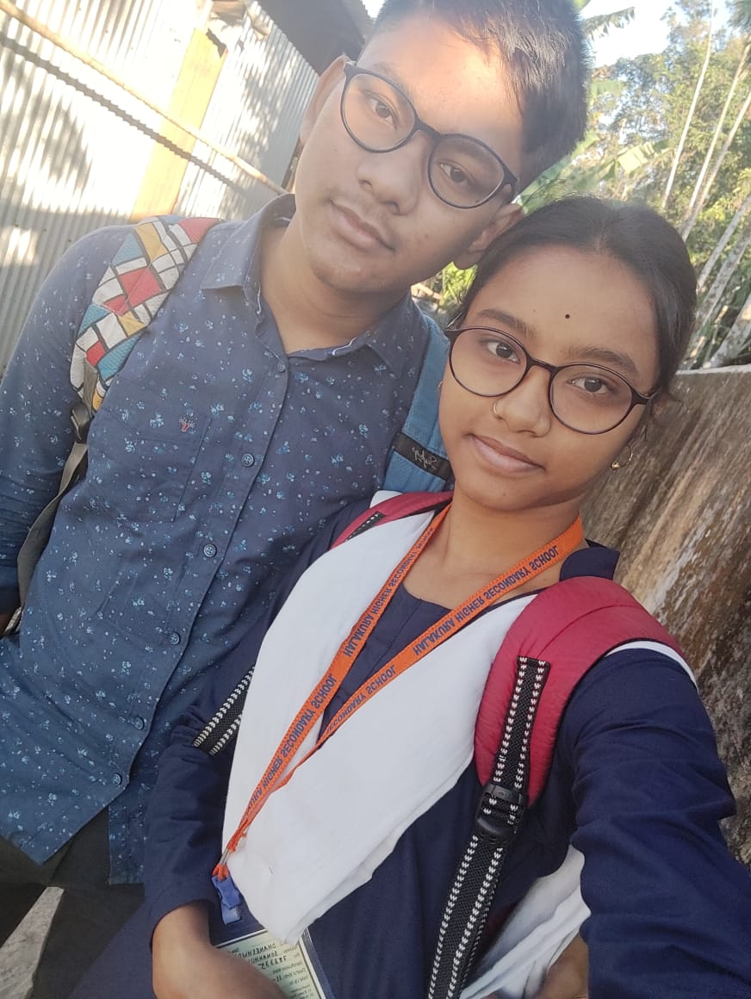
We would always reach tuition a little earlier than everyone else, just to steal a few moments together before the others arrived.
Those little moments meant so much to us because we rarely got to see each other. Since I could only attend tuition on holidays and weekends, every meeting felt special.
We would go days without seeing each other, so whenever we finally met, even the simplest moments together felt precious.
Looking back, it wasn't just about reaching tuition early; it was about finding a little more time with each other whenever life allowed us to.
I have always felt grateful for those tuition days because they gave me something I might never have found otherwise — a chance to meet you.
Since we could only see each other occasionally, even the shortest moments felt special. Sitting beside you, hearing your voice and talking face to face meant more to me than I ever realised. I never knew how much I would miss those little moments until they became memories I could only look back on.
Specially in our later days, I found myself wishing I could sit beside you again, hear you speak and simply enjoy having you near. What once felt so ordinary became some of the most precious memories I would ever hold.
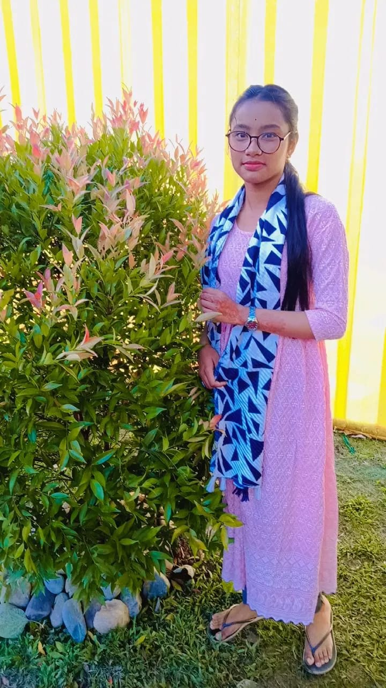
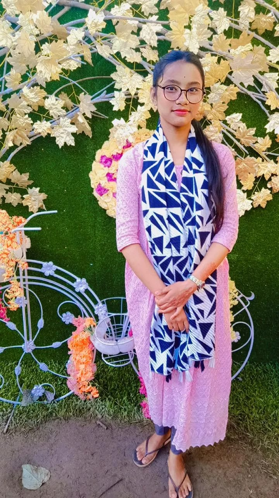
We were invited by the Durga Puja committee to be felicitated for our HSLC results. We spent such a beautiful time together that day, creating memories without realising how precious they would become.
We also took some pictures together, but unfortunately, I lost them.
It still hurts a little because those were probably the most beautiful pictures of us ever captured. I wish I could have kept them, not just as photographs, but as little pieces of a moment I wish I could revisit.
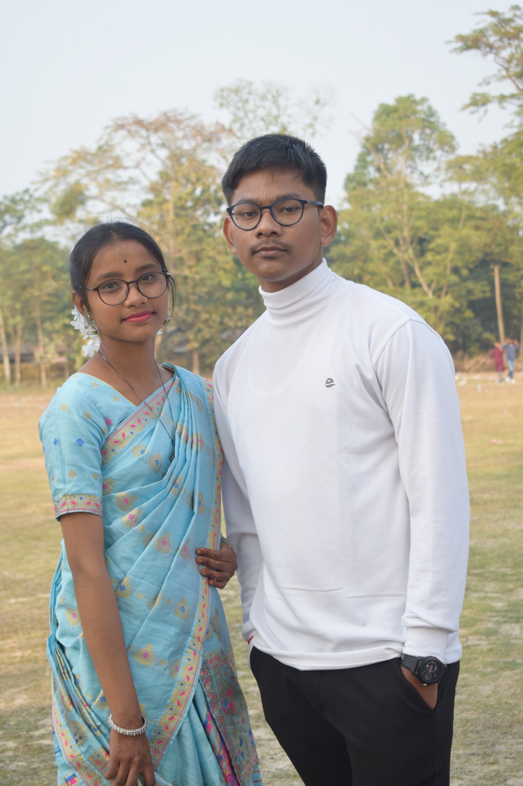
This picture holds a very special place in my heart. It was taken on Saraswati Puja in 2023, a day I still remember fondly. I had chosen to come home to spend the occasion with you, leaving behind my school and friends in Dhubri. Instead of celebrating the festival there, I decided to come home just to be with you.
Although you were quite occupied with your school responsibilities as a member of the puja committee, we still managed to create some beautiful memories together.
Looking back, it wasn't about how much time we spent together. What made that day special was the simple fact that I had chosen to be where you were. And somehow, that ordinary day became one of those memories I will always hold close to my heart.
And soon came another painful day — the end of our tuition days. With our HS examinations approaching, our classes finally came to an end, taking away the little opportunity we had to see each other.
Those classes had become more than just a place to study. They gave us a reason to meet, even if only occasionally. Those brief moments beside you made me genuinely happy and the thought of losing them was heartbreaking.
Once again, distance stood between us. But this time, there would be no more tuition classes, no occasional encounters and I didn't know when I would get to see you again.
Guwahati
My New Beginning
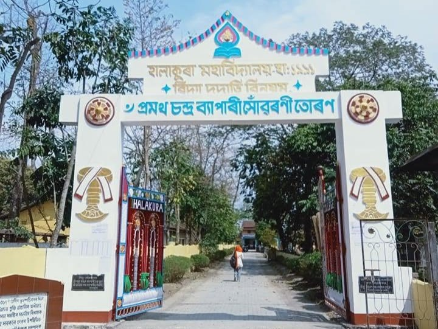
Halakura
Your New Beginning
From this point on, everything began to change. I moved to Guwahati to prepare for NEET, while you began your college life. We were no longer walking the same academic path. Our subjects, our routines, our surroundings — everything had become different.
And as if that wasn't enough, we were now hundreds of kilometres away from each other. The days when we could meet, spend time together or simply see each other without making any special plans were gone. We could no longer be a part of each other's everyday lives the way we used to be.
Slowly, the distance between us was no longer just about kilometres; it had become a part of our everyday reality.
Even when we couldn't meet, we still found ways to be part of each other's everyday lives.
Even though we were now hundreds of kilometres apart, we continued to stay connected through WhatsApp messages. Our conversations became one of the ways we remained part of each other's everyday lives.
We talked about ordinary things, shared little updates, discussed our studies and told each other about what was happening around us. We could no longer meet whenever we wanted, but we still found ways to share our days.
The distance had changed how we spent time together, but our conversations continued. In a way, WhatsApp became the place where our everyday moments could still meet.
We found little ways to make the distance feel less distant.
We usually found time for each other late at night. Along with our WhatsApp messages, video calls became another part of our everyday routine.
But our video calls were a little different. Since we didn't want others around us to know that we were on a call, we would keep our microphones muted. Instead of speaking, we would text each other while looking at one another through the screen.
It might seem unusual to someone else, but for us, it became a familiar little habit. We could see each other's faces, read each other's messages and spend time together without saying a word. Even though we were far apart, those late-night calls gave us moments when the distance seemed a little less difficult.
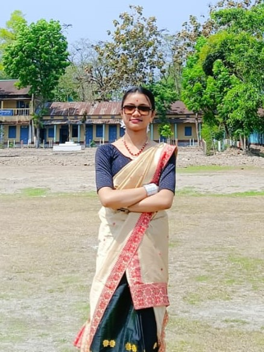
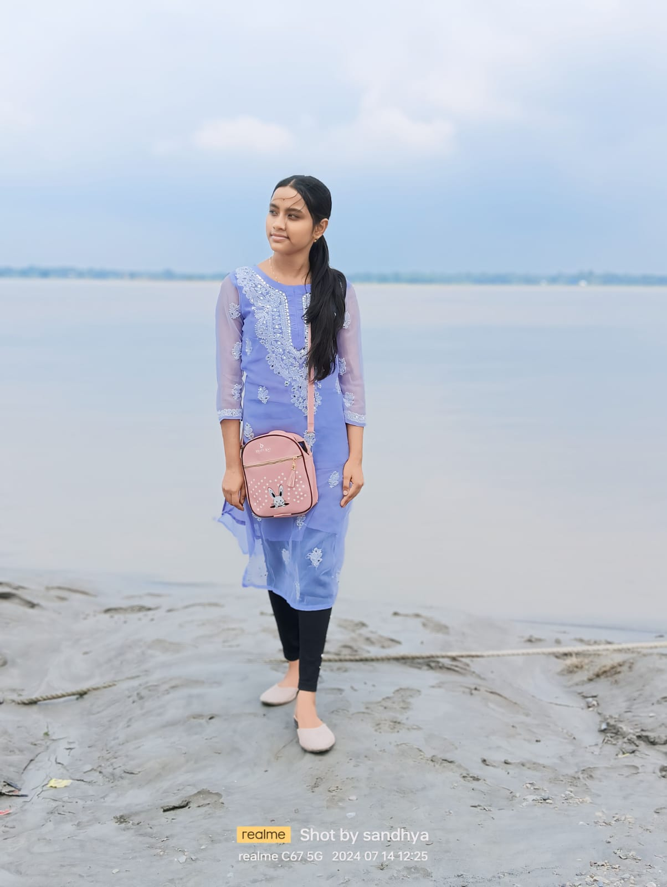
Whenever you clicked a picture, you would share it with me. And every time you sent me one, I would save it, keeping it as a little treasure of my own.
I often went back to look at those pictures. They may have been just photographs to you, but to me, they meant much more. Each one gave me a chance to see you, even when we were miles apart.
Slowly, those pictures became a collection of memories I held close to my heart. I don't know if you ever realised how much happiness those simple photographs brought me, but I treasured every single one.
Whenever I returned home from Guwahati, there was one little thing I often found myself doing. I would pass in front of your house, hoping to catch a glimpse of you.
I knew I couldn't just come and meet you like before. We had grown distant and even the simplest opportunity to see you had become something I couldn't take for granted.
Sometimes, I would see you from a distance. It might have lasted only a few seconds, without a conversation or even a proper meeting. But those little glimpses meant more to me than you probably ever knew.
I wasn't expecting anything. I just wanted to see you, even if it was only for a moment. And sometimes, that brief sight of you was enough to make my day a little more special.
After spending my first drop year in Guwahati, things didn't turn out the way I had hoped. I couldn't clear NEET and I had to return home.
It was a difficult outcome to accept, but I wasn't ready to give up on my dream. I decided to take another drop and continue preparing for NEET. However, this time, things would be different. Instead of moving away again, I decided to stay at home and prepare through online classes.
A new phase of my life was beginning. I was back home, no longer hundreds of kilometres away and ready to start another year of preparation.
With my second NEET drop beginning, I had to move to Pokalagi, about 3 km from Halakura, to live with my parents, as my younger brother had moved to Halakura to stay with Bapi and Baroma so he could attend school and tuition more conveniently.
Most of my days were spent studying, so I rarely went out without a reason. But whenever I visited Halakura, I chose the slightly longer route past your house, hoping to catch a glimpse of you. I rarely did, but I never wanted to miss even that small chance. Our tuition days were over and with them, one of the few opportunities we had to meet.
After spending so long hundreds of kilometres apart, we were now just three kilometres away. Yet, even then, seeing you remained a distant little wish.
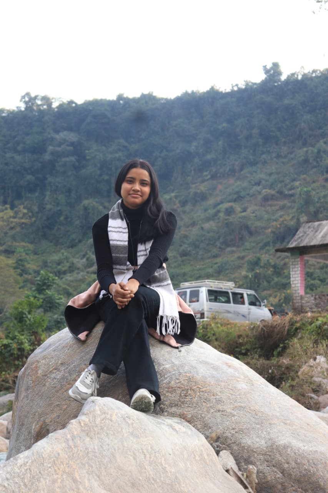
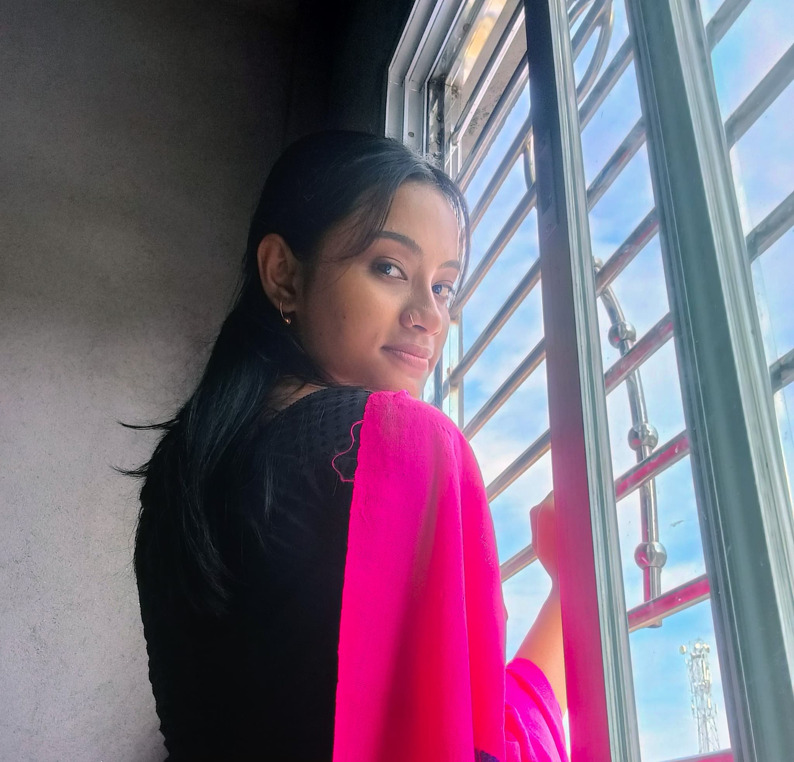
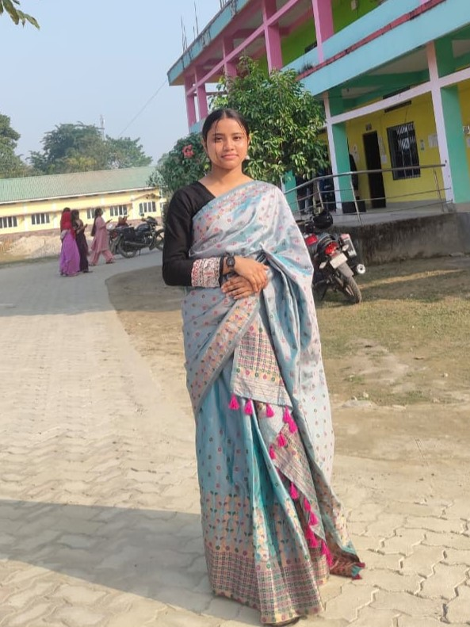
Even during my second drop year, we continued to stay connected through WhatsApp. You still shared your pictures with me and our conversations continued through messages and video calls.
Although we couldn't meet in person, these little exchanges kept us connected. I saved the photographs you sent and treasured them, just as I had before.
23 JANUARY 2026 · SARASWATI PUJA
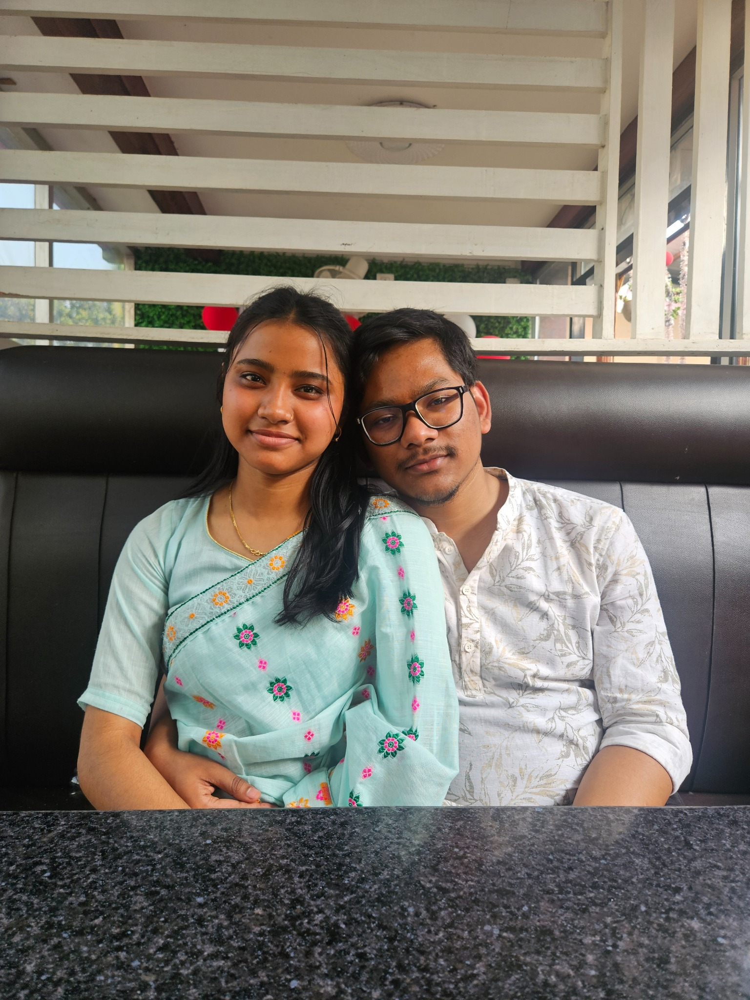
After so many years of barely getting to spend time together, we finally went on a date to Tufanganj, accompanied by one of your friends and her partner. You and your friend travelled by public transport, while I rode my scooty with her partner. We went to a restaurant, where we finally got to spend some quality time together.
For the first time, we weren't trying to make the most of a few brief moments at tuition or looking at each other through a phone screen. You were right there beside me. I could hold your hand, hold you by the waist and feel you rest your head on my shoulder. And perhaps what made it even more special was that, for once, I wasn't afraid of others seeing us together. I could simply be beside you without worrying about who might notice us.
But more than any particular moment, what I treasured most was your presence. After years of messages, calls and wishing I could see you, you were finally sitting beside me. We weren't separated by a screen anymore. We could talk, share moments and simply enjoy being together.
For all those years, I had wished for moments like these. And that day, I finally got to live them without holding back.
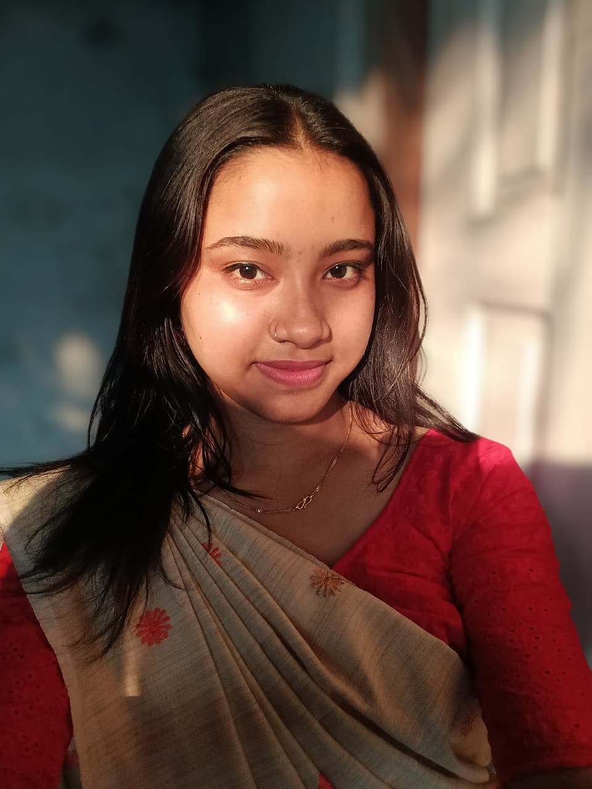
You continued sharing your pictures and little videos with me, just as you had always done. These were part of our usual conversations and receiving them had become such a familiar little happiness in my everyday life.
I never imagined that these would be the last pictures and video you would share with me before things between us began to change. Back then, I had no reason to think of them as anything different from all the other pictures you had sent me. I simply saved them, watched them and treasured them, just as I always did.
But looking back now, they mean so much more. I can no longer think of them as just a few photographs and a video. They are among the last little glimpses of you that I received while we were still sharing those ordinary parts of our lives. And perhaps that's why I hold on to them so dearly. I didn't know they were going to become such precious memories when you sent them.
4 MARCH 2026 · HOLI
On March 4, during Holi, you came to put colours on me. I had just finished taking a bath, so I stopped you without realising how much it would hurt your feelings.
As you were leaving, you had a minor accident with your scooty. It happened slowly and thankfully, you weren't injured or thrown off the vehicle. At first, I didn't even notice what had happened. By the time I realised, from nowhere your father arrived.
I thought going there would only make the situation more awkward, so I stayed away. But my decision to stay away hurt you even more. After that day, you didn't message me for several days.
I never intended to hurt you that day, but I understand that my actions did. At the time, I didn't realise how much that one day would affect the days that followed.
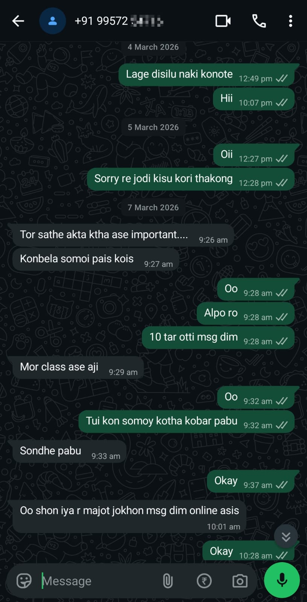
Immediately after the incident, I rushed home and tried calling and messaging you, but there was no reply. I messaged you again that night, around the time we usually talked, but still heard nothing.
The next day, I asked one of my friends to message you and check if everything was okay. You replied that everything was fine. I also sent you an apology in case I had done anything wrong, but there was no response. The following day, I asked another friend to contact you, but you didn't reply immediately. That night, you removed your profile picture. Later, you replied to my friend and said you would message me.
The next morning, your message woke me up. You said you had something important to tell me. We agreed to talk later, but your message never came. Later, you explained that you hadn't messaged because I had an examination the next day. But by then, I was already so worried and distracted that my preparation had suffered and my exam went badly.
Even after the exam, there was no message. That day, you also hid your last seen from me. The next night, I contacted the friend who had accompanied us to Tufanganj and learned that your grandfather had passed away the previous day. A little later, your message finally arrived.
9 MARCH 2026
After five days of silence, you finally contacted me and told me that you wanted to end our relationship.
You explained that our families were different, our marriage was uncertain and you weren't willing to face that uncertainty. You also said that I didn't respect your parents, something I believed was completely untrue. You felt you couldn't fulfil my expectations, although I had never felt that way. I did have expectations, including physical ones, but I would never want you to go beyond your comfort or against your wishes. Your happiness and decisions always mattered more to me.
You also brought up something I had said in the past — that if you didn't become successful, our future together would be difficult. I had said it only to motivate you to study harder, never intending to make you feel that our future depended on your success. But you had understood those words differently and they had hurt you deeply.
You told me that you wanted to remain single after the breakup.
Before our conversation ended, I made one final request: I asked you not to block me. I didn't want to lose the possibility of contacting you completely. You agreed.
And just like that, after five years, three months and twelve days together, our relationship came to an end. A future I had imagined for so long was no longer something we would share.
Even after March 9, I wasn't ready to accept that our story had ended. I still believed you loved me and I kept hoping that someday we might find our way back to each other. You had said that you wanted to remain single, but you had never asked me to wait or promised that we would be together again. Still, I held on to that hope.
When we ended things, I asked you not to block me. I wanted to believe that someday we could still talk. But on March 26, you blocked me. That hurt not only because it closed one way to reach you, but because the one last request I had made during our separation had not been kept.
I had imagined contacting you after my NEET examination. I even hoped you would wish me luck before the exam. It might have seemed like a small thing, but to me, it would have meant that despite everything, you still remembered me and cared about what happened in my life.
On May 3, I appeared for NEET. My preparation had suffered and the examination did not go well. I felt disappointed and felt that I had let my family down. I cannot say that the relationship was the only reason; my own preparation, decisions and circumstances also played their part. But emotionally, I was not in a good place.
After NEET, I shifted my attention towards my other examinations. My first examination went well and for a little while, I felt that I could still regain control of my life.
Then NEET was cancelled. That brought another opportunity through Re-NEET. At first, it felt like a second chance—a chance to correct what had gone wrong. I gradually started preparing again. My concentration was improving and I was slowly regaining the rhythm I had lost.
I was beginning to move forward, even though I still had unanswered questions about you and our relationship. More importantly, I was still carrying the hope that we might eventually be together again.
On June 1, I learned from someone else that you were in a relationship with someone. Hearing that left me with so many questions. I wanted to hear the truth from you, so I decided to contact you. Since you had already blocked my usual number, I messaged you using another number that you hadn't blocked and our conversation goes like:
Our conversation on June 1 revealed a series of events from the final months of our relationship that I had never known about.
December 2025
He followed you on Instagram. You told me that he might have feelings for you, so I asked you to let me know if he ever contacted you.
February 24, 2026
He messaged you and you replied. You did not inform me about it.
February 26, 2026
Two days later, he confessed his feelings and proposed to you. I still knew nothing about any of this.
February 27–28, 2026
We did not communicate during these two days because I was preparing for my mock test on March 1.
March 4, 2026
The Holi incident took place. You later told me that you had considered deleting Instagram and stop communicating with him, but neither happened.
March 9, 2026
After five years, three months and twelve days of togetherness, we ended our relationship.
March 24, 2026
Just fifteen days after our relationship ended, you began a new relationship with the same person who had first messaged you on February 24.
Looking back at these dates, we had spoken on February 24–26 and again from March 1–3, yet you never told me about his messages or confession. Later, you said you had forgotten to tell me and explained that my mock test was why we hadn't talked, although that only accounted for February 27–28.
You had also considered deleting Instagram and stopping communication with him, but neither happened after Holi. Instead, your communication continued and perhaps this was how your feelings for him had begun to grow and you finally came in to relationship just fifteen days after our breakup.
After June 1, my concentration suffered again. I had been slowly rebuilding my preparation for Re-NEET, but the things I learned that day brought back the emotional confusion I had been trying to overcome.
Despite everything, I continued trying. Alongside Re-NEET, I also appeared for CUET, NEST and IAT, hoping that perhaps another opportunity would work out.
It did not go as well as I had expected.
I could not qualify.
I missed getting a seat by just two questions.
I missed my target by a small margin.
I cannot honestly attribute these results entirely to what happened in my personal life. My preparation and performance were my responsibility, too. But I also cannot pretend that the revelation had no effect on me. It affected my state of mind at a time when I was trying to recover and prepare for examinations that mattered deeply to me.
After June 1, I found myself struggling with a reality I couldn't understand. I kept looking for you, checking your social media, saving your photographs whenever I came across them and trying to find answers through our mutual friends.
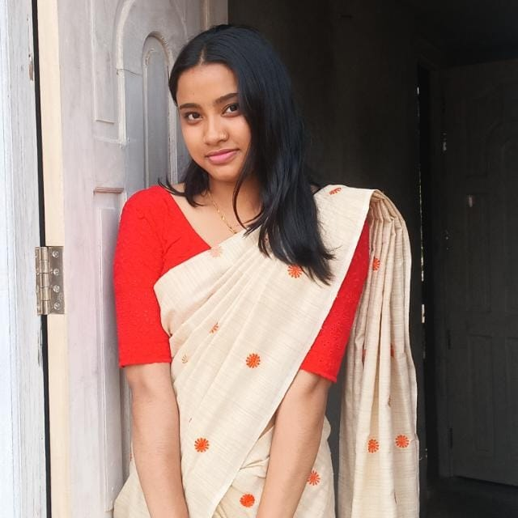
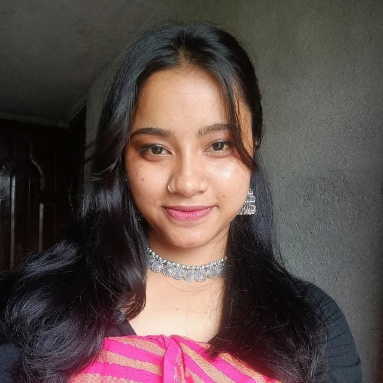
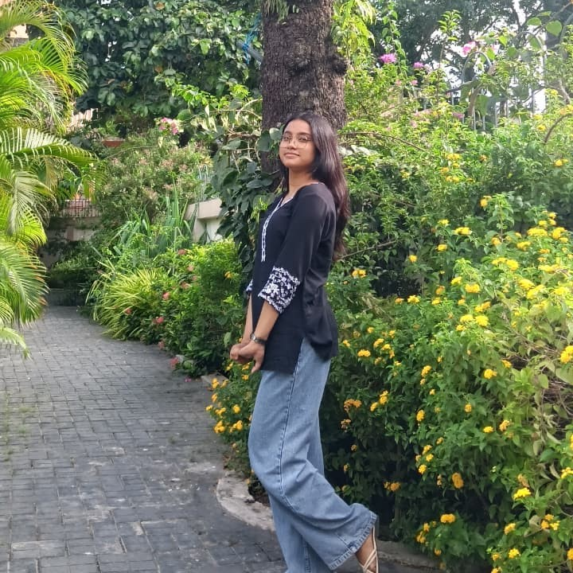
Even after everything, I still wanted to tell you about my life. Whenever something happened, even something ordinary, I would instinctively think of sharing it with you.
With so many words left unsaid, I began writing poems. I wrote about our memories, the questions I couldn't answer, the things I missed and everything I wished you could understand.
All those conversations I had imagined, all those little things I wanted to share and all those words I wrote for you remained unfinished conversations between me and myself.
11th November, 2020
My first message to you
Some dates are not merely numbers on a calendar; they are little doors that time leaves open for memories.
Six years ago, this very date opened one for us. Today, I return to it with no wishes for yesterday, only a prayer for all your tomorrows.
And after this, I shall not write to you again. No more messages, no more attempts to cross the distance between us. I simply wanted to close this circle where it began, with the same thing my first words to you carried — a birthday wish.
May good health walk beside you through every season of life and may the seeds of every effort you have sown blossom into the success your heart has long dreamed of. Let the dreams you have kept folded in the quietest corners of your heart find their wings and let life take you to places more beautiful than your imagination has ever wandered. May the world be generous with its opportunities, the years gentle with your spirit and the road ahead filled with discoveries worth remembering.
But above all, I hope happiness finds a permanent home within you. Not merely in the grand victories or the fulfilment of distant dreams, but in the smallest of things—in unguarded laughter, in peaceful moments, in people who make your heart feel at ease and in the quiet belief that, whatever life may bring, there will always be beauty waiting to be found.
Happy Birthday.